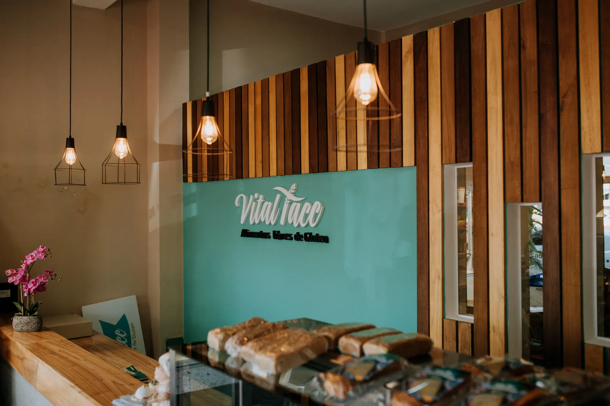
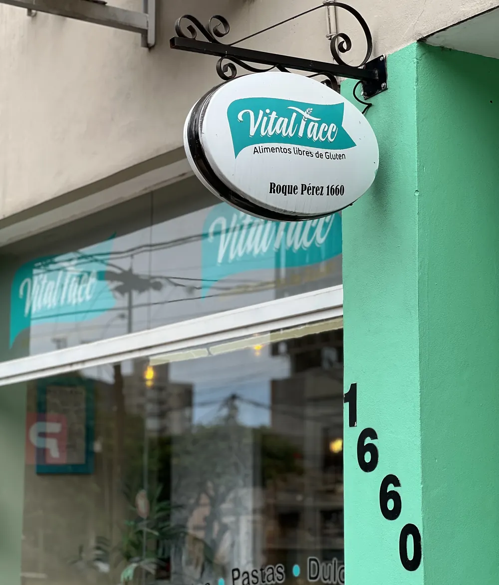

Alimentos libres de gluten
Pan, pastas y dulces sin TACC para comer tranquilo
Productos libres de gluten hechos con pasión, calidad y compromiso. Pedilos online o pasá por el local.

Roque Pérez 1660, Posadas, Misiones
Para empezar
Algunos productos que tenemos disponibles hoy.

El local
Pasá a vernos
Productos frescos, atención cálida y momentos reales compartidos con nuestros clientes.
- Roque Pérez 1660, Posadas, Misiones